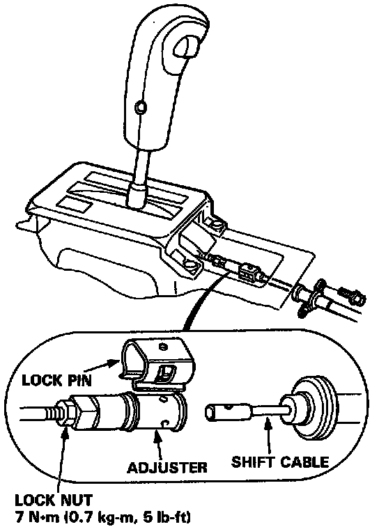
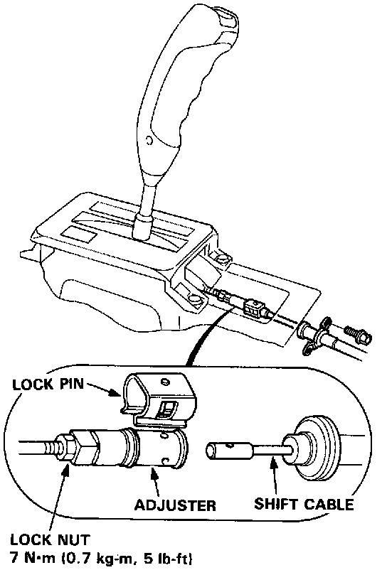
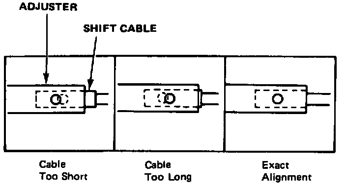

Shift Cable: Adjustments
Shift Cable Adjustment1. Start the engine. Shift to reverse to see if the reverse gear engages. If not, refer to hydraulic system troubleshooting. Testing and Inspection
2. With the engine off, remove the console.


3. Shift to Reverse, then remove the lock pin from the cable adjuster.

4. Check that the hole in the adjuster is perfectly aligned with the hole in the shift cable.
NOTE: There are two holes in the end of the shift cable. They are positioned 90° apart to allow cable adjustments in 1/4 turn increments.
5. If not perfectly aligned, loosen the locknut on shift cable and adjust as required.
6. Tighten the locknut.
7. Install the lock pin on the adjuster.
NOTE: If you feel the lock pin binding as you reinstall it, the cable is still out of adjustment and must be readjusted.
8. Start the engine and check the shift lever in all gears. If any gear does not work properly, refer to hydraulic system troubleshooting. Testing and Inspection